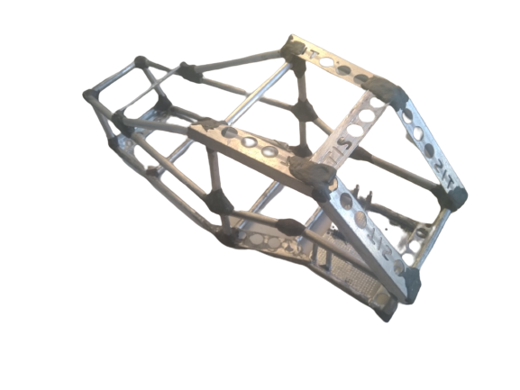

Радіокерована машинка
Опис:
Корпус
Виготовлений з алюмінієвих трубок і профілей, скріплених між собою за допомогою холодної зварки.
Загальна довжина використаних трубок і профілей: приблизно 2,7 м.
Вага: 315г.

Електрика
В якості плати керування використовувався бездротовий 4х канальний передавач на базі чіпу SC2272-M4. Мотори: двох-осьовий двигун з редуктором 1:48. Драйвер для моторів: модуль mini-L298N H-мост на 9В.

Увага!
-
Передавач і мотори мають працювати від різних джерел живлення. Для передавача можна використовувати батарейки. Для моторів тільки акумулятор.
-
До приймача обов'язково треба припаяти антену довжиною 23,8 см. Товщина дроту не має бути великою. Як варіант, використити одну жилу від інтернетного кабелю. Щоб антена не була помітна її можна змотати в спіраль діаметром 4,5мм і довжиною 26мм.